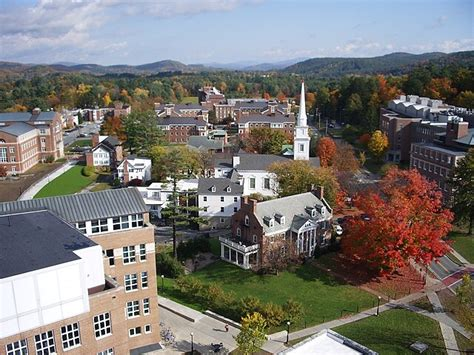
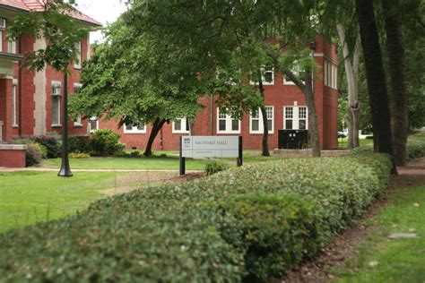
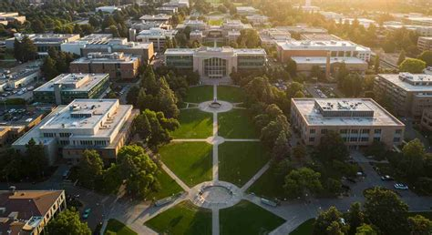
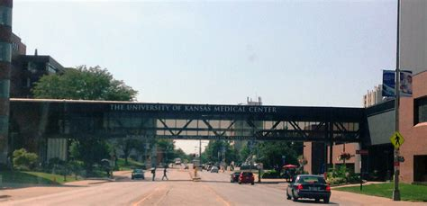
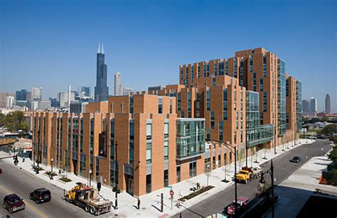
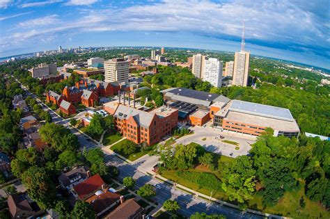
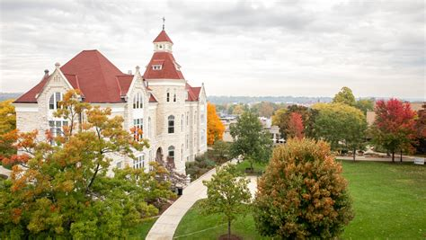
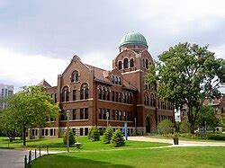
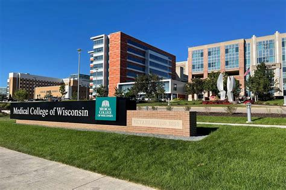

Top 10
Dartmouth College
Tier 1 rank in the U.S. for Medicine.
Located in Hanover, New Hampshire, Dartmouth offers an ivy league experience!

File:Dartmouth College Campus 2007-10-20 10.JPG - Wikimedia Commons, commons.wikimedia.org/wiki/File: Dartmouth_College_campus_2007-10-20_10.JPG.
Dartmouth Graduate AdmissionsEastern Carolina University
Tier 1 rank in the U.S. for Medicine.
Located in Greenville, North Carolina, ECU has a beautiful campus and lovely community!

Hoard, Brent. “East Carolina University - Grad Admissions Office.” Flickr, Yahoo!, 16 Nov. 2026, www.flickr.com/photos/bhoard/3695064960.
Eastern Carolina Graduate AdmissionsUniversity of Wisconsin - Madison
Tier 1 rank in the U.S. for Medicine.
UW-Madison is part of the big 10 schools in America, and it offers a fun and enriching experience!

“University of Wisconsin–Madison Named an Innovation and Economic Prosperity University.” News, 15 Oct. 2025, news.wisc.edu/ university-of-wisconsin-madison-named-an-innovation-and-economic-prosperity-university/.
UW-Madison Graduate AdmissionsUniversity of Minnesota - Twin Cities
Tier 1 rank in the U.S. for Medicine.
UM-Twin Cities is a local, educational, and uplifting college located in Twin Cities, Minnesota.

“Visit the University of Minnesota Twin Cities.” Visit Us | University of Minnesota Twin Cities, admissions.tc.umn.edu/visit/visit-university-minnesota-twin-cities.
UM-Twin Cities Graduate AdmissionsUniversity of California - San Diego
Tier 1 rank in the U.S. for Medicine.
UC-San Diego is known for its beautiful location in La Jolla, California, and it is also known for its high graduate success rate!
“UC San Diego Campus Highlights.” California.Com, www.california.com/uc-san-diego-campus-highlights/
UC San Diego Graduate AdmissionsUniversity of California - San Francisco
Tier 1 rank in the U.S. for Medicine.
Located in San Francisco, California, UC-San Francisco offers top tier education and a beautiful location!
“University of California, San Francisco.” Wikipedia, Wikimedia Foundation, 7 Nov. 2026, en.wikipedia.org/wiki/University_of_ California,_San_Francisco.
UC-San Francisco Graduate AdmissionsUniversity of California - Davis
Tier 1 rank in the U.S. for Medicine.
Located in Davis, California, UC-Davis is artsy, scientific, and fun!

“UC Davis Achieves Comprehensive Excellence in Rankings, Fundraising, and Sustainability.” Forward Pathway, 8 July 2025, www.forwardpathway.us/uc-davis-achieves-comprehensive-excellence-in-rankings-fundraising-and-sustainability.
UC-Davis Graduate AdmissionsUniversity of Kansas Medical Center
Tier 1 rank in the U.S. for Medicine.
Located in Kansas City, Kansas, KUMC is a cutting edge medical school!

“University of Kansas School of Medicine.” Wikipedia, Wikimedia Foundation, 9 Aug. 2026, en.wikipedia.org/wiki/University_of _Kansas_School_of_Medicine.
UK Medical Center Graduate AdmissionsUniversity of Hawaii - Manoa
Tier 1 rank in the U.S. for Medicine.
Located in Manoa, Hawaii, UH-Manoa has a rewarding program located near the ocean!
“University of Hawaii (Manoa), Oahu, Hawaii (4).” Flickr, Yahoo!, 16 Nov. 2026, www.flickr.com/photos/kenlund/4549734 021/.
UH-Manoa Graduate AdmissionsSaint Louis University
Tier 1 rank in the U.S. for Medicine.
Located in Saint Louis, Missouri, SLU is a top tier college with a vibrant community!
“Saint Louis University.” Wikipedia, Wikimedia Foundation, 30 Aug. 2026, de.wikipedia.org/wiki/Saint_Louis _University.
SLU Graduate AdmissionsLocal 10
University of Wisconsin - Madison
Tier 1 rank in the U.S. for Medicine.
UW-Madison is part of the big 10 schools in America, and it offers a fun and enriching experience!
“University of Wisconsin–Madison Named an Innovation and Economic Prosperity University.” News, 15 Oct. 2025, news.wisc.edu/ university-of-wisconsin-madison-named-an-innovation-and-economic-prosperity-university/.
UW-Madison Graduate AdmissionsUniversity of Minnesota - Twin Cities
Tier 1 rank in the U.S. for Medicine.
UM-Twin Cities is a local, educational, and uplifting college located in Twin Cities, Minnesota.
“Visit the University of Minnesota Twin Cities.” Visit Us | University of Minnesota Twin Cities, admissions.tc.umn.edu/visit/visit-university-minnesota-twin-cities.
UM-Twin Cities Graduate AdmissionsMichigan State University
Tier 2 rank in the U.S. for Medicine.
Michigan State is located in East Lansing, Michigan, and it offers a spirited and academic-centered lifestyle!

“Michigan State University: Lansing, MI.” Choose Lansing, www.lansing.org/michigan-state-university/.
Michigan State Graduate AdmissionsUniversity of Illinois - Chicago
#46 in the U.S. for Math.
Located in the heart of Chicago, Illinois, UIC combines city living with college life!

“University of Illinois at Chicago (UIC) Department of Communication.” Communication Studies, 12 Sept. 2012, www.communicationstudies.com/ communication-colleges/ university-of-illinois-at-chicago-uic-department-of-communication.
UIC Graduate AdmissionsUniversity of Wisconsin - Milwaukee
Unranked in the U.S. for Medicine.
UW-Milwaukee offers a beautiful campus nestled in an urban environment!

Facebook, www.facebook.com/uwmstugov/.
UW-Milwaukee Graduate AdmissionsCarroll University
Unranked in the U.S. for Medicine.
Carroll University is located in Waukesha, Wisconsin, and it offers a challenging but rewarding education!

Facebook, www.facebook.com/carroll.university/.
Carroll University Graduate AdmissionsLoyola University - Chicago
Unranked in the U.S. for Medicine.
Loyola University is located in Chicago, Illinois, and it offers an experience of a lifetime!

“Loyola University Chicago.” Wikipedia, Wikimedia Foundation, 10 Oct. 2026, en.wikipedia.org/wiki/Loyola_University _Chicago.
Loyola Graduate AdmissionsUniversity of Chicago
Unranked in the U.S. for Medicine.
Located in downtown Chicago, University of Chicago offers a savvy and supreme education!

Smentkowski, Elena. “Illinois Licenses Are Set for Some Big Changes in 2025-Here’s What to Know.” Secret Chicago, 26 Feb. 2025, secretchicago.com/illinois-id-laws-2025/.
University of Chicago Graduate AdmissionsNorthwestern University
Unranked in the U.S. for Education.
Located in Chicago, Illinois, Northwestern offers an urban, thrilling, and social graduate experience!

University Reviews Policies after Off-Campus Shooting - Northwestern Now, news.northwestern.edu/stories/2023/ 04/university-reviews-policies-after-off-campus-shooting.
Northwestern Graduate AdmissionsMedical College of Wisconsin
Unranked in the U.S. for Medicine.
The Medical College of Wisconsin is located in Milwaukee, Wisconsin. With a wide variety of medical and scientific programs, students can enhance their career here!

Photos & Videos | Newsroom | Medical College of Wisconsin, www.mcw.edu/newsroom/resources/ photos.
Medical College of Wisconsin Graduate Admissions